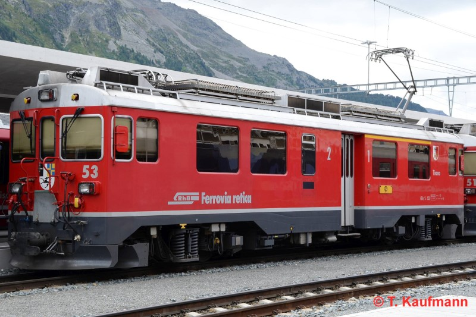
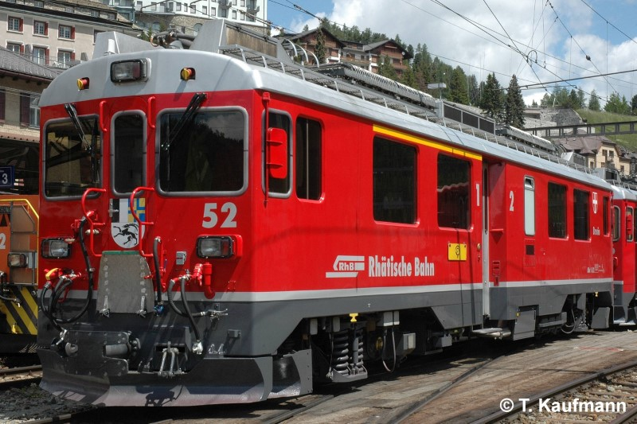

Allgemein
| Baujahr | 1988 |
| Einsatz | BB |
| Antriebstechnik | Umrichtersteuerung |
| Leistung | 1380 PS / 1016 kW |
| Ergänzungsbremse | elektrische Bremswiderstände, Rekuperationsbremse |
Technische Daten
| Geschwindigkeit | 65 km/h |
| Länge | 16.88 m |
| Gewicht (Tara / Burtto) | 49 t / 52 t |
| Bremsgewicht | 50 t |
| Magnetschienenbremse | 9 t (BG total = 59 t) |
| Feststellbremse | Fsp 58 kN (24 t) |
Fahrzeugausrüstung
| Nylatron-Pufferplatten | ja |
| Vielfachsteuerung | 61 + 19 polig |
| Zugbeeinflussung | ZSI E |
| Heizleitung | keine |
| Speiseluft-Leitung | ja |
| Bremssystem | Vakuum-Hauptleitung |
| Steuerleitung Spurpflug | 1000 V-Steckdose Schneeschleuder (inaktiv) |
| Türen | elektropneumatisch |
| Notfalleinrichtung | NBA blau |
Fahrgastausstattung
| Plätze 1. Klasse | 12 |
| Plätze 2. Klasse | 16 |
| Klappsitze | 1 |
| Niederflureinstiege | keine |
| Rollstuhlplätze | keine |
| WC-System | 1x geschlossen |
| Velohaken | keine |
| Fahrgastinfosystem | Automatische Railvox (mit GPS-Abgleich) |
| Zugzielanzeigen | keine |
| Fahrgastzählung | AFZ - Master |